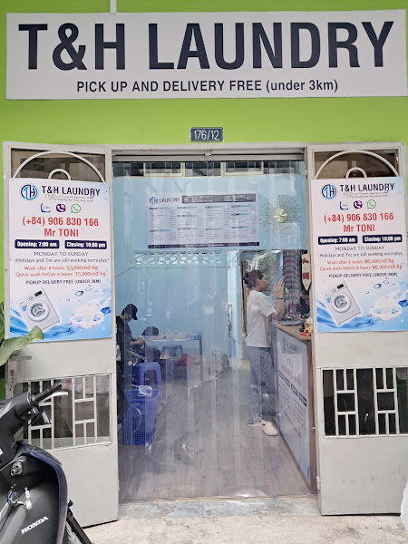
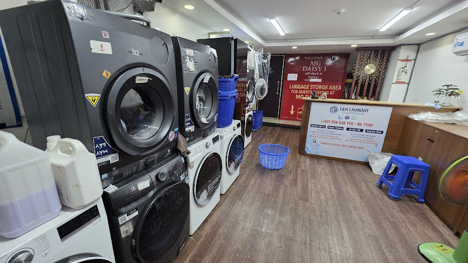
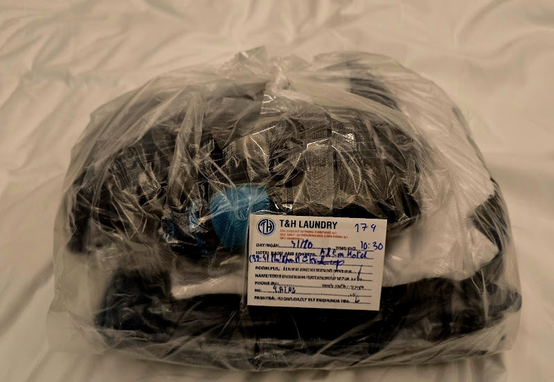
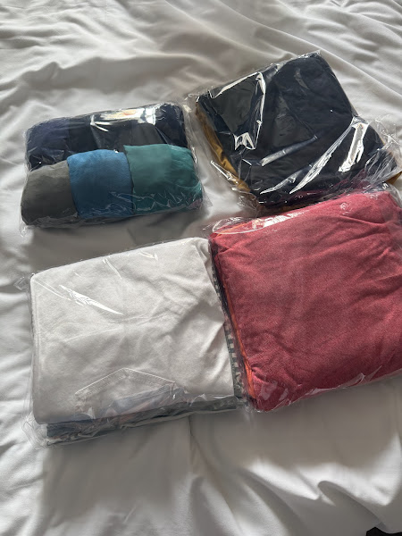

Giặt thường
Wash & fold, xong trong 10 giờ làm việc; gửi trước 13:00 có thể trả trong ngày.
55.000đ/kg176/12 Lý Tự Trọng · Bến Thành · Hồ Chí Minh
Giặt, sấy, gấp và giao tận nơi quanh Bến Thành. Khách khen đồ thơm, đóng gói cẩn thận, giao đúng hẹn.
Giờ mở cửa · 07:00–22:00 (website tiệm)

Bảng giá
Đọc ngày 11/11/2026. Dịch vụ khác: Liên hệ để báo giá.
| Giặt thường | 55.000đ/kg |
| Express (dưới 8 giờ) | 75.000đ/kg |
| Premium (dưới 4 giờ) | 100.000đ/kg |
| Chỉ sấy | 30.000đ/kg |
| Ủi | 40.000đ/cái |
| Giặt tay | 60.000đ/cái |
| Giặt giày | 350.000đ/đôi |
| Giao nhận trên 3km / trên 5km | 60.000đ / 80.000đ |
Không gian

Máy giặt/sấy, quầy nhận đồ.

Tem T&H, giao khách sạn.

Tách loại, bọc riêng.
Đánh giá
Tổng ~1.227 đánh giá theo aggregator — chưa phải tổng Maps chính thức.
★★★★★Lấy quần áo rất nhanh, liên hệ khách và báo giá rõ ràng, giao hàng đúng hẹn. Quần áo được bỏ vào từng túi phân loại rõ.
Thảo Đoàn · toididau
★★★★★I dropped it off in the morning and it was delivered to our hotel by dinner. The service from start to finish was impeccable.
Kenny Tran · toididau
★★★★★Đồ nhận được thơm thơm, xếp ngăn nắp và các bạn giao đồ đến khách sạn rất đúng giờ.
Huong Baxter · toididau
Hỏi đáp
176/12 Lý Tự Trọng, Bến Thành, Hồ Chí Minh 70000 (website và biển hiệu). Website tiệm ghi đã chuyển tới địa chỉ này từ đầu tháng 3.
Theo website thlaundry.com và biển: 07:00–22:00 mỗi ngày. Chưa đối chiếu PlacesSearch. Nên gọi 0906 830 166 trước khi đến.
Theo website (11/11/2026): giặt thường 55.000đ/kg. Express 75.000đ/kg, premium 100.000đ/kg. Dịch vụ khác: Liên hệ để báo giá.
Website ghi miễn phí dưới 3km; trên 3km 60.000đ, trên 5km 80.000đ. Nhắn Zalo/WhatsApp 0906 830 166.
Ghé tiệm
176/12 Lý Tự Trọng, Bến Thành, Hồ Chí Minh 70000
Điện thoại: 0906 830 166
Website hiện có: thlaundry.com
Zalo: zalo.me/84906830166
| Thứ Hai | 07:00–22:00 |
| Thứ Ba | 07:00–22:00 |
| Thứ Tư | 07:00–22:00 |
| Thứ Năm | 07:00–22:00 |
| Thứ Sáu | 07:00–22:00 |
| Thứ Bảy | 07:00–22:00 |
| Chủ Nhật | 07:00–22:00 |
Giờ theo website tiệm. Chưa PlacesSearch.